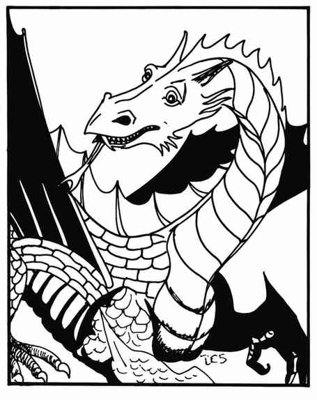

青铜龙 · Bronze Dragon（Draco Gerus Bronzo）
 |
|
青铜龙喜欢在湖海等大型水域附近的地下巢穴栖居。它们虽爱财宝，天性却仁善；常化身为动物观察人类事务。攻击方式为爪、爪、咬，或使用两种吐息之一：长 10 寸、宽 ½ 寸的闪电束，或长 2 寸、宽 3 寸、高 3 寸的排斥气云。气云效果如同排斥术，使其中生物远离青铜龙，持续 6 个近战轮；通过对抗龙息的豁免检定可抵抗。
会施法的青铜龙在第一、第二成长阶段各获一个一环法术；第三、第四阶段另获二环法术；第五、第六阶段获三环法术；极老与古青铜龙再获四环法术。因此古青铜龙每环各会两个一至四环法术。随机决定法术。
上一节：黄铜龙 · Brass Dragon（Draco Impudentus Gallus）
下一节：色彩龙 · Chromatic Dragon